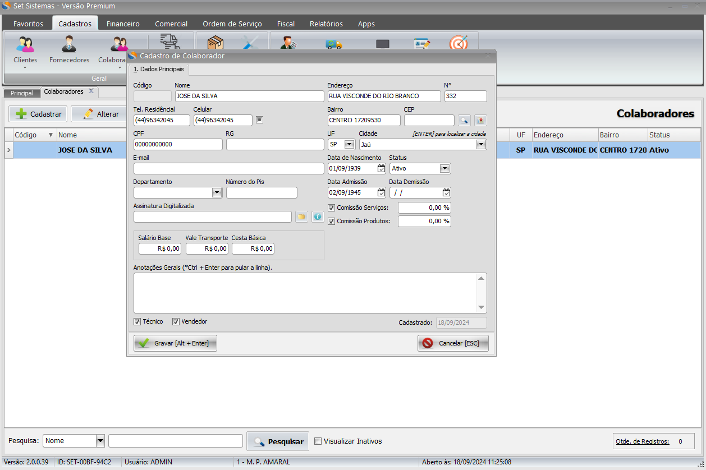
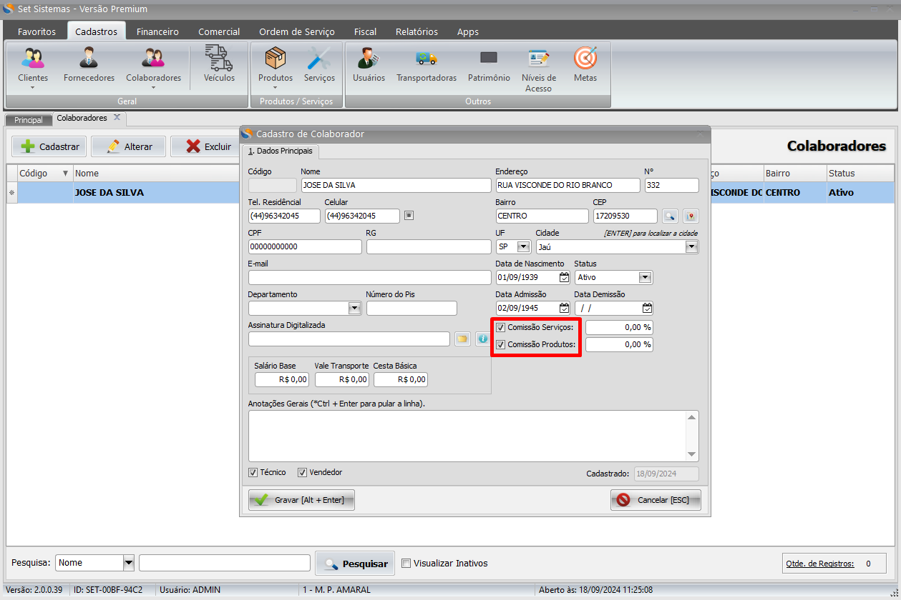

Introdução
Para cadastrar um colaborador clique na aba Cadastros.
Clique no botão Colaboradores, que abrirá a tela de cadastro de colaboradores.
Informe os dados do colaborador como: Nome, Endereço, N°, Celular, Bairro, CEP, UF e Cidade.
Para informar a porcentagem (%) de comissão dos colaboradores, precisamos marcar, de acordo com sua necessidade, as opções Comissão Serviços ou Comissão Produtos e depois informar a comissão dele.
Tendo preenchido os dados do seu colaborador, basta utilizar o atalho [ALT + Enter] ou clicar no botão Gravar e o cadastro já será concluído.